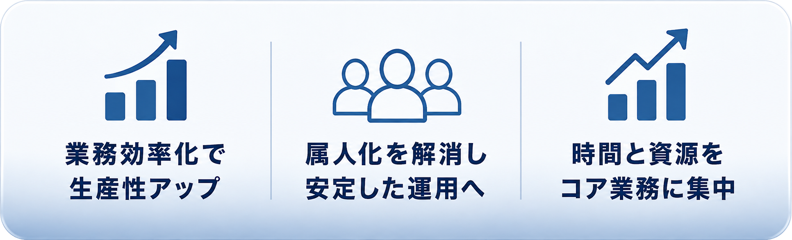

中小企業の業務効率化と
仕組み化を支援する実装パートナー
AIを学ぶだけで終わらせません。
御社の業務に使える仕組みとして納品します。
中小企業向けAI業務改善パック

ビジネスに「余白」を作ります。
What's Different
AI研修を受けても、現場の業務が変わらないことがあります。
理由はシンプルです。学ぶことと、業務で使える仕組みを作ることは別だからです。
社員がAIを学んでも、どの業務に使うのか、どう運用するのか、誰が管理するのかが決まっていなければ、結局使われません。
このサービスは、AIを学ぶ講座ではありません。
御社の業務に合わせて、実際に使える仕組みを作る実装サービスです。
Problem
中小企業では、長年の担当者だけが知っている仕事がたくさんあります。
なんとなく危ないとは分かっている。
でも、忙しくて後回しになっている。
そこにAIを入れます。
業務効率化だけでなく、会社に残る資産を作っていきます。
Step-by-Step
いきなり高額なシステム構築を提案するサービスではありません。
まずは無料の「AI化優先順位チェックシート」で、御社の業務を整理していただきます。
チェックシートでは、業務の負担、属人化の度合い、質問の多さ、ミスの起きやすさなどを確認します。
回答いただいた内容をもとに、AI化しやすい業務と、最初に着手すべき業務が見えやすくなります。
必要な方には、その後に5万円の「AI業務診断＋デモ構築」をご案内します。
メールアドレスを登録すると、AI化優先順位チェックシートの案内が届きます。
日報、問い合わせ、マニュアル、教育、引き継ぎなど、AI化候補を確認します。
業務負担、属人化、質問の多さ、ミスの起きやすさを入力します。
どの業務からAI化すべきか、社内で考える材料が整理されます。
より具体的に進めたい場合のみ、AI業務診断＋デモ構築をご案内します。
Demo Examples
デモは、難しいAIツールの説明ではありません。
御社の業務に合わせて、まずは小さく試せる形にします。
What You Get
問い合わせ返信、議事録、日報、資料作成に時間を取られている会社におすすめです。
AIで成果が出やすい業務には、わかりやすい特徴があります。
それは、毎回似たような入力があり、毎回似たような判断や文章作成が発生している業務です。
たとえば、問い合わせへの一次返信、社内マニュアルの確認、議事録の整理、日報の要約、提案書の下書き、チェックリスト作成などです。
診断では、御社の業務をヒアリングしながら、「AIに任せやすい業務」と「人が判断すべき業務」を切り分けます。
いきなり全社導入を目指すのではなく、まずは小さく試して効果が見えやすい場所を見つけます。
ベテラン社員や社長に確認が集中している会社におすすめです。
中小企業には、「あの人に聞かないと進まない仕事」がよくあります。
普段は問題なく回っているように見えても、担当者が休む、異動する、退職するだけで業務が止まるリスクがあります。
診断では、担当者の頭の中にある手順、判断基準、よくある質問、過去の対応例を洗い出します。
そこから、社内マニュアルAI、社内FAQ、新人教育AI、業務引き継ぎAIとして使える形に整理します。
人に依存していた知識を、会社に残る資産に変えていきます。
AIを使いたいが、何から始めればいいかわからない会社におすすめです。
AI導入で失敗しやすい会社は、最初から大きな仕組みを作ろうとします。
でも、最初にやるべきなのは、小さく作れて、現場がすぐ使えて、効果を説明しやすい業務です。
診断では、「工数が多い」「ミスが起きやすい」「質問が多い」「担当者依存が強い」「成果が見えやすい」という視点で優先順位をつけます。
最初の一歩が決まると、社内での説明もしやすくなります。
御社にとって、今すぐ試すべき業務から整理します。
説明だけでは社内の理解が進まない会社におすすめです。
AIの説明を聞くだけでは、なかなか社内は動きません。
大事なのは、「実際に触ると、どう業務が変わるのか」を見せることです。
診断後は、御社の業務に合わせて簡易デモを作成します。
たとえば、社内マニュアルAI、問い合わせ対応AI、日報まとめAI、議事録要約AI、営業提案書AIなどです。
実物に近い形で確認できるので、社長、担当者、現場メンバーが同じイメージを持ちやすくなります。
AI導入を一度きりで終わらせず、業務改善につなげたい会社におすすめです。
AI導入は、ツールを入れて終わりではありません。
業務の流れ、社内ルール、使う人、管理する人、更新する情報まで整える必要があります。
診断では、最初に作るデモ、次に整える社内データ、現場での使い方、運用ルールまで整理します。
「何から始めるか」「誰が使うか」「次に何を整えるか」が見えるので、社内で検討しやすくなります。
小さく試して、効果が見えたところから本格導入に進める形を提案します。
FAQ
Get Started
AI化優先順位チェックシートで、業務負担・属人化・質問の多さを整理できます。
必要な方には、回答内容をもとに5万円のAI業務診断＋デモ構築をご案内します。
無料チェックシートから開始・必要な方のみ有料診断をご案内
Free Check Sheet
入力いただいたメールアドレスに、チェックシートの案内をお送りします。